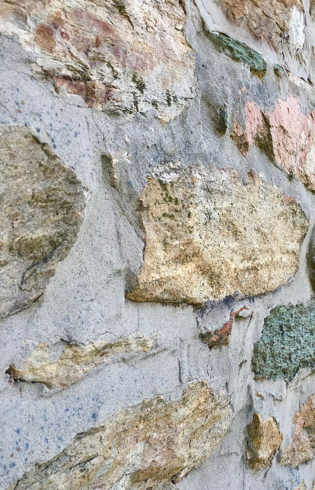
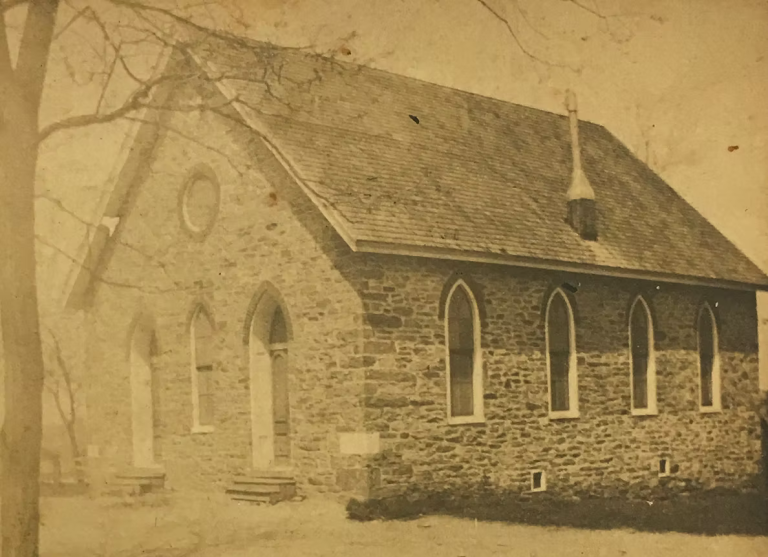

The roots of the Stone Chapel congregation date back to 1761, when Robert Strawbridge began the first Methodist class meeting in America. Robert and his wife, Elizabeth, immigrated from Ireland in 1760 intending to farm — but Robert soon found himself preaching far more than farming.
Together, Robert and Elizabeth began hosting class meetings in their home to share the love of God and the teachings of Christ. Stone Chapel is one of the Methodist congregations that traces its roots directly back to these meetings. Ever since, Stone Chapel has spread the message of the Gospel through word, deed, and service to New Windsor, Westminster, and the surrounding communities.
Robert Strawbridge
The name Strawbridge is integral to the history of Stone Chapel. Robert Strawbridge — described as “of medium size, dark complexion, black hair, and possessing a sweet voice” — was born in Drummersnave (now Drumsna), about five miles east of Carrick-on-Shannon in County Leitrim, Ireland, around 1730.
Raised a Catholic, he was converted to Methodism around the age of 28. It has been suggested, though never proven, that he was converted by John Wesley himself, the founder of Methodism, on one of Wesley's many trips to Ireland.
Whether or not he was licensed to preach by Wesley, Strawbridge quickly began to do so. His newfound zeal was not well received in that very Catholic part of Ireland. Persecuted, he was driven to County Cavan, where he was much more appreciated and described as a “man of more than ordinary usefulness and very ardent and evangelical in his spirit.”
In County Cavan he met Elizabeth Piper, whom he married. Robert and Elizabeth emigrated to the United States in 1759 or 1760, seeking the religious freedom that Maryland and the New World offered. They arrived in Annapolis on a grain boat, where Robert learned of the fertile land in what is now Carroll County (then Frederick County).
The couple settled at Sam's Creek on a 50-acre farm belonging to John England. The moment they were settled, Robert set out to preach, leaving Elizabeth to operate the farm with the gracious help of neighbors. Robert traveled on horseback throughout Maryland, Virginia, Delaware, and Pennsylvania.
When Francis Asbury, the first American Methodist bishop, arrived in America on October 28, 1771, he found more than 30 preaching stations begun by Strawbridge. One of those was the forerunner of Stone Chapel. Strawbridge bought the England farm in 1773 for 50 pounds, later moving to a donated home in Baltimore County. He died while on a preaching tour in 1781, was buried near his place of death, and was later re-interred in the “Bishop's Lot” at Mount Olivet Cemetery on Frederick Avenue in Baltimore.
Never ordained, he held a strong belief in the ministry of the laity — raising up other lay preachers wherever he went.
Robert Strawbridge was an interesting man. Among those he raised up was Jacob Toogood, the first Black preacher in America, who had been enslaved on the Maynard farm near New Windsor. Strawbridge had little regard for church authority and a strong streak of stubbornness. Even when prohibited from administering the sacraments of Baptism and Communion, he continued to do so. One of the things his obstinance led to was the building and founding of Stone Chapel.
And now, fast-forwarding to the present day, we celebrate this history and our connection to the very foundation of Methodism in the United States.
The Founding of Stone Chapel
On October 22, 2023, Stone Chapel celebrated the 240th anniversary of its founding. A direct descendant of Robert Strawbridge, John Strawbridge, gave a short talk memorializing this founding and how today's Stone Chapel UMC came to be. Below is a reprint of John's talk, which you can also watch on YouTube.
The Year is 1783…
A world taking shape, the year the first stones were laid
- Feb 3Great Britain formally recognizes the independence of the American States; the following day it declares an end to hostilities.
- Apr 5Preliminary articles of peace are ratified by the Congress of the Confederation.
- SeptemberThe signing of the Treaty of Paris officially ends the Revolutionary War.
- That fallHumans fly for the first time, as the Montgolfier Brothers in France launch the world's first hot air balloon.
- OctoberIn St. Peter's Abbey in Salzburg, Mozart's new Great Mass in C Minor is performed for the first time.
- Nov 2General George Washington delivers his Farewell Address to the Army; on December 23 he resigns his commission in the Maryland State House in Annapolis.
- 1783And in the year of our Lord, one thousand seven hundred and eighty-three, the first stones were laid for a new stone chapel in Pipe Creek, Maryland.

The area formerly known as Pipe Creek was an important hub of early Methodism in America for preaching, conferencing, and camp meeting, and Bishop Asbury was a frequent visitor. The chapel often referred to as “the Pipe Creek chapel” was properly known as “Strawbridge's Stone Chapel,” named in honor of the founder of the congregation, who had passed away two years before the stone chapel was built. Given the sometimes difficult relationship between Asbury and Strawbridge, it is perhaps little wonder that Asbury used the descriptive “Pipe Creek chapel” in his journal rather than its proper name.
Strawbridge's Stone Chapel was so called because it replaced a wood-frame chapel, which itself replaced the class meeting once held around the nearby Strawbridge Oak — both on the property of Andrew Poulson, brother-in-law of John Evans, the first recorded American convert to Methodism. The stone chapel would be taken down and rebuilt with the same stones two more times, resulting in the beautiful and historic building that today is Stone Chapel United Methodist Church.
Home to one of the earliest groups of Methodists to meet in America, Stone Chapel is the archetypal example of the evolution of the Methodist meeting house: beginning as a “house-church” in the Wesleyan model and growing into a modern United Methodist Church.
The congregation known today as Stone Chapel UMC began its missional life as early as 1763 as the second Class Meeting established in America by Robert Strawbridge. Strawbridge's first class met in various locations — first in his own home, then in the homes of neighbors, including that of his landlord, John England. This first society eventually met in the Log Meeting House before settling for many years in the home of John Evans, one of the very first converts to Methodism in America.
Andrew Poulson was John Evans's brother-in-law, and a second Methodist Class meeting was soon organized in his home. As large as that home was for the area, the meeting grew so popular that it would no longer fit inside. So their meeting place evolved into a second form common among Methodists: meeting outdoors, under a tree. Not far from Poulson's house stood a large oak, thirty feet around at the base. Robert moved the class meeting to this tree, which became famously known as “The Strawbridge Oak.”
Having been a member of both the first and second Methodist Class Meetings, Poulson was committed to seeing the Methodist movement in America take firm root. He donated land on the southeast corner of his farm so that a full-time chapel could be built. In 1780, a wood-frame meeting house was constructed and known as Poulson's Chapel. The congregation must have thrived, because only a few years later, in 1783, the frame meeting house was taken down and replaced with a chapel of stone. It was called “Strawbridge's Stone Chapel” to honor Robert, who had passed away two years before, but it quickly came to be called simply “The Stone Chapel,” and occasionally the “Pipe Creek chapel.” On Sunday, August 20, 1786, Francis Asbury “rode twenty miles to Pipe Creek chapel, and preached to a large congregation.”
That congregation would grow larger still. In 1800, Asbury preached a revival meeting nearby, resulting in a sudden increase in attendance, so the chapel was rebuilt using the same stone, adding a gallery on three sides to accommodate the additional worshipers. Two members, Jesse Durbin and Benjamin Bennett, were instrumental in this rebuilding, and their initials were memorialized in a stone tablet on the front of the building.
By its one-hundredth anniversary in 1883, the Stone Chapel needed considerable structural repair. The building was taken down and rebuilt — again using the same stone — and the gallery was removed. Meanwhile, the venerable Strawbridge Oak continued to stand not far away on what had been the Poulson Farm. But in 1905 it succumbed to age, and in 1907 its wood was harvested. A pulpit chair made from the oak was placed in the Stone Chapel sanctuary at that time. It remains there today.
Stone Chapel Methodist Episcopal Church, as it was renamed, continued to flourish into the twentieth century. In 1951, a parish hall — built of concrete block with brick facing — was added to house the Sunday School and other church activities.

Across the street, the Stone Chapel cemetery is the final resting place for many of its members. Because the Poulson Farm has been sold — and resold — the headstones from the family burial ground were relocated here, although the remains themselves still rest on the former Poulson property.
Stone Chapel is part of the “Robert Strawbridge Cluster” historic site (GCAH #491). It is an important milestone in the journey of Methodism in America. From house-church to outdoor meeting, from wood-frame to stone, from historic Class Meeting to modern United Methodist congregation, Stone Chapel embodies the history of Methodist meeting places.
In 2023, we celebrate 240 years that are etched in stone. But this House of God traces its roots back more than 250 years.
I would argue that Stone Chapel has its origins in the Book of Genesis and the story of Jacob, who stood a stone on its end and called that place “Beth El” — or “House of God.”